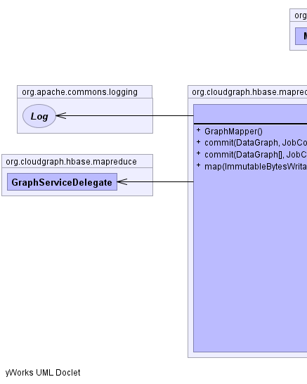
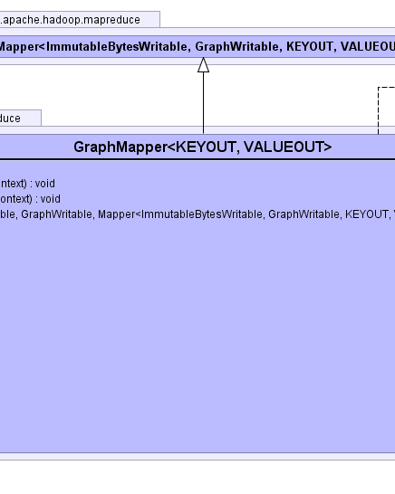

KEYOUT - the output key typeVALUEOUT - the output value typepublic class GraphMapper<KEYOUT,VALUEOUT> extendsimplements GraphMutator
graphs as the input value
to MapReduce Mapper client subclasses, the input key being an
HBase row key bytes and the input value being a GraphWritable assembled from
one or more underlying HBase table(s)/row(s).
The data graphs supplied to the code>Mapper are ready to modify but
the graph change summary must be set to track changes, so changes will be
detected. See the below code sample based on the Wikipedia domain model which
adds a fictitious category page link to each input graph.
public class PageGraphModifier extends GraphXmlMapper<ImmutableBytesWritable, GraphWritable> {
public void map(ImmutableBytesWritable offset, GraphWritable graph, Context context)
throws IOException {
// track changes
graph.getDataGraph().getChangeSummary().beginLogging();
Page page = (Page) graph.getDataGraph().getRootObject();
Categorylinks link = page.createCategorylinks();
link.setClTo("Some Category Page");
link.setClTimestamp((new Date()).toString());
// commit above changes
super.commit(row, graph, context);
}
}
Data graphs of any size of complexity may be supplied to MapReduce jobs
including graphs where the underlying domain model contains instances of
multiple inheritance. The set of data graphs is provided to a MapReduce job
using a query, typically
supplied using GraphMapReduceSetup.
Data graphs are assembled within a GraphRecordReader based on the
detailed selection criteria within a given query, and may
be passed to a GraphRecordRecognizer and potentially screened from
client GraphMapper extensions potentially illuminating business logic
dedicated to identifying specific records.
GraphWritable,
GraphRecordReader,
GraphMapReduceSetup|  |  |
| Constructor and Description |
|---|
GraphMapper()
Default constructor
|
| Modifier and Type | Method and Description |
|---|---|
void |
commit(DataGraph[] graphs,
JobContext jobContext) |
void |
commit(DataGraph graph,
JobContext jobContext) |
void |
map(ImmutableBytesWritable row,
GraphWritable graph,
Context context) |
public void map(ImmutableBytesWritable row,
GraphWritable graph,
Context context)
throws java.io.IOException
java.io.IOExceptionpublic void commit(DataGraph graph,
JobContext jobContext)
throws java.io.IOException
commit in interface GraphMutatorjava.io.IOExceptionpublic void commit(DataGraph[] graphs,
JobContext jobContext)
throws java.io.IOException
commit in interface GraphMutatorjava.io.IOExceptionCloudGraph® is a registered trademark of TerraMeta Software, Inc. Copyright © 2014 - All Rights Reserved.